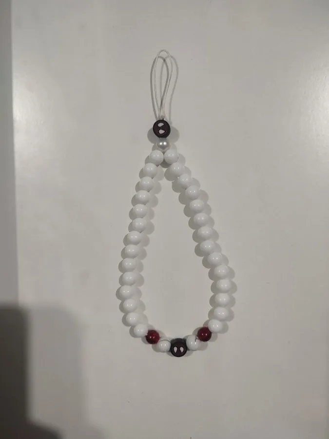
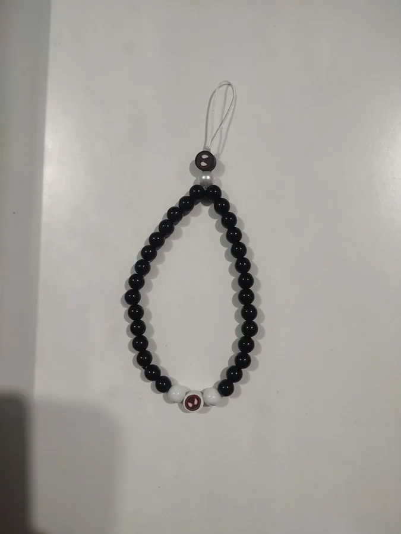
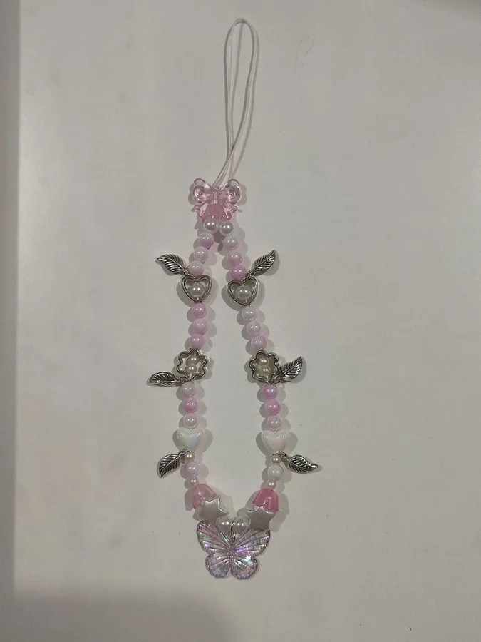
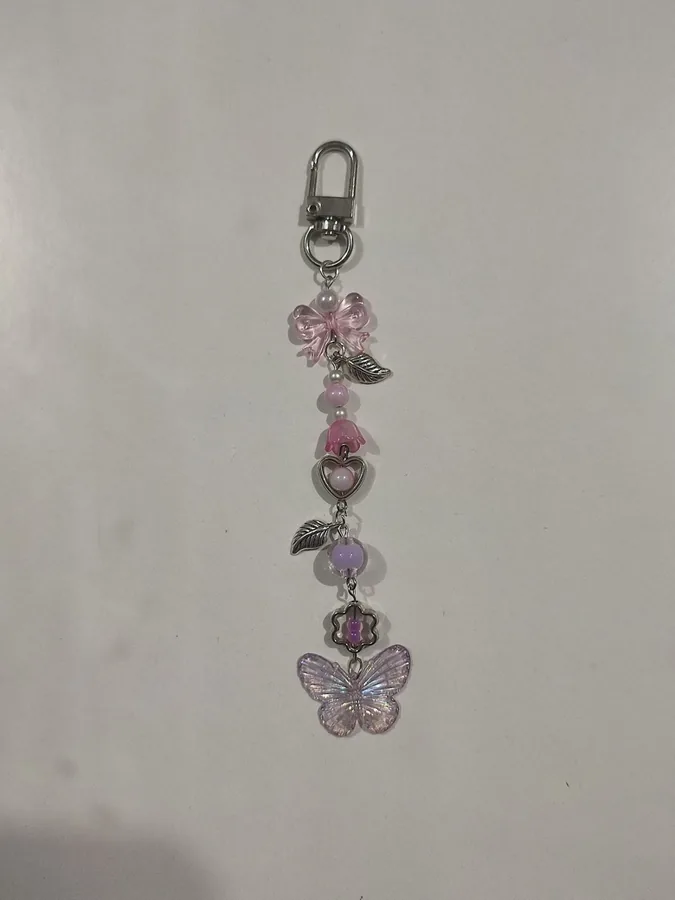

White Phone Strap
White beads the whole way round, broken at the bottom by two deep red beads and a printed face bead. Finishes in a white cord loop that threads through a phone case.
$2 Buy on Ko-fiBeaded by hand · Cavite, PH
Beaded by hand, a few strands at a time, and finished with a loop that threads through a phone case or a clasp that clips to a bag. Everything on this page is made to order, so give me a few days before it ships.

White beads the whole way round, broken at the bottom by two deep red beads and a printed face bead. Finishes in a white cord loop that threads through a phone case.
$2 Buy on Ko-fi
Black beads with a pair of white ones at the bottom and a single red face bead between them. Same white cord loop, so it fits any phone case.
$2 Buy on Ko-fi
Pink and pearl beads strung under a clear pink bow, with silver hearts, flowers and leaves spaced down both sides and tulip beads near the bottom. An iridescent butterfly hangs off the end, and a white cord loop threads through a phone case.
$2 Buy on Ko-fi
The same beads and charms as the phone strap, strung shorter and hung off a silver lobster clasp so it clips to a bag, a belt loop or your keys. Bow at the top, butterfly at the bottom.
Message for price Ask about this oneWant a colour that is not here
Custom strands cost a little more depending on the beads and charms. Message me with what you have in mind and I will quote it before you pay.